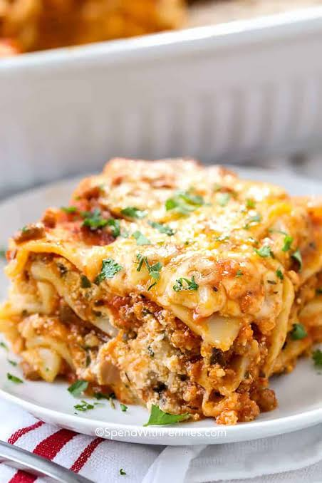

Lasagna is one of the most traditional and beloved dishes in Italian cuisine, with roots that trace back to ancient times. This comforting meal is built by layering wide, flat sheets of pasta with a rich variety of ingredients, most commonly a slow-cooked ragù (Bolognese sauce), creamy béchamel, and plenty of grated cheese. When baked in the oven, these layers fuse together into a bubbly, golden masterpiece that balances different textures and deep, savory flavors. It is a timeless classic that brings people together, often served as the centerpiece for Sunday family gatherings
While the classic recipe from the Emilia-Romagna region remains the gold standard, lasagna is incredibly versatile and adapts well to different tastes and lifestyles. Today, you can find numerous variations worldwide, ranging from vegetarian options filled with spinach, ricotta, and roasted vegetables, to seafood versions or lighter, gluten-free alternatives using sliced zucchini instead of traditional pasta. This flexibility, combined with the fact that it often tastes even better the next day as the flavors settle, makes lasagna a favorite choice for home cooks looking to prepare a satisfying and hearty meal.